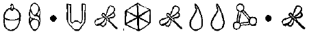
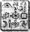

ARTEMIS FOWL'UN HÜCRESİ, SPİRO İĞNESİ
İLK lazer darbesi tavanı kestiğinde Artemis meditasyon yapıyordu. Lotus pozisyonundan doğrulup kazağını tekrar giydi ve yere yastıklar koydu. Birkaç saniye sonra, bir metal kare, yere düştü, çapma sesini yastıklarla boğuldu. Holly’nin yüzü delikte belirdi.
Artemis yastıkları gösterdi. “Benim hazırlıklı olmamı bekliyordun. ”
LEP Yüzbaşısı başıyla onayladı. “Daha on üç yaşında ve olacakları önceden görebiliyor.”
“Sanırım dumanı çekmek için havalandırmayı kullandın.”
“Kesinlikle öyle. Sanırım birbirimizi çok iyi tanımaya başladık.”
Hâlâ kemerinden bir piton çivi çıkarıp onu odaya indirdi.
“Dibine sağlam bir ilmik at ve içine gir. Seni yukarı çekeceğim.”
Artemis söylenen gibi yaptı ve bir saniye sonra delikten yukarı çıkıyordu.
“Bay Foaly yanımızda mı?” diye sordu.
Holly, Artemis’e küçük silindirik bir kulaklık verdi. “Kendin sor.”
Artemis bu nanoteknoloji harikasını kulağına soktu.
“Peki, Foaly. Beni hayretler içinde bırak.”
Aşağıda, Haven Şehrinde, sentor ellerini ovuşturdu. Onun konferanslarını gerçekten anlayan tek kişi Artemis’ti.
“Bunu seveceksin, Çamur Çocuk. Seni sadece kapalı devre görüntülerden silmekle kalmadım, tavanın çöküşünü silmedim aynı zamanda bir sahte Artemis de yaptım.
Bu, Artemis’in ilgisini çekti. “Bir sahte ben mi? Gerçekten mi? Bunu tam olarak nasıl yaptın?”
“Gerçekten basit,” dedi Foaly, alçak gönüllü bir şekilde. “Yüzlerce dosyalık insan filmlerim var. Büyük Kaçış’taki Steve McQueen’in hücreye kapatılma sahnesini ödünç aldım ve kıyafetlerini değiştirdim.”
“Ya yüz?”
“Senin son Haven ziyaretinde sorgunun dijital filmi var. İkisini birleştirdim ve işte karşınızda. Bizim yapay Artemis ona söylediğim her şeyi yapabilir, her ne dersem diyeyim. Şu anda, sahte uyuyor ama yarım saat içinde ona tuvalete gitmesini söyleyebilirim.”
Hâlâ piton kablosunu geri sardı. “İşte modern bilimin harikası. LEP senin departmanına milyonlar döküyor ve senin yapabildiğin tek şey Çamur Çocukları tuvalete yollamak.”
“Bana karşı nazik olman gerekiyor, Holly. Sana büyük bir iyilik yapıyorum. Eğer Julius sana yardım ettiğimi bilseydi, inanılmaz derecede kızacaktı.”
“Senin de yardım etme nedenin aslında bu.”
Holly hızla kapıya doğru gidip hafifçe araladı. Koridor boş ve sessizdi; dönen kameraların sesi ve flüoresan ışıklarının uğultusu hariç. Holly’nin siperliğinin bir bölümü Spiro’nun güvenlik kameralarından gelen, minyatür, saydam görüntüler gösterdi. Bu katta devriye gezen altı nöbetçi vardı.
Holly kapıyı kapattı.
“Tamam. Hadi başlayalım. Nöbetçiler değişmeden Spiro’ya ulaşmamız gerekiyor.”
Artemis yerdeki deliğin üzerine bir halı serdi. “Dairesinin yerini belirledin mi?”
“Tam üzerimizde. Oraya çıkmamız ve retinayla baş parmak taramasını yapmamız lazım.”
Artemis’in yüzünde hızlı bir ifade değişikliği oldu. Sadece bir anlık.
“Taramalar. Evet. Ne kadar çabuk olursa o kadar iyi olur.”
Holly daha önce insan çocuğun hatlarında böyle bir ifade görmemişti. Bu, suçluluk duygusu muydu? Bu olabilir miydi?
“Bana söylemediğin bu yüzden mi var?” diye sordu.
O ifade kaybolup yerini her zamanki duygusuz olana terk etti.
“Hayır, Yüzbaşı Short. Hiçbir şey yok. Gerçekten şu anın sorgulama için uygun bir an olduğunu düşünmüyorsunuz, değil mi?”
Holly tehdit edercesine parmağını salladı. “Artemis. Eğer şimdi, operasyonun tam ortasında başıma dert açarsan, bunu unutmayacağım.”
“Merak etme,” dedi hoşnutsuz bir şekilde Artemis. “Ben unutacağım.”
Spiro’nun dairesi Artemis’in hücresinin tam iki kat üstündeydi. Orasının da güçlendirilmiş olması anlamlıydı. Ne yazık ki Jon Spiro kimsenin onu gizlice izlemesini istemiyordu, bu yüzden binanın bu bölümünde kamera yoktu.
“Tipik,” diye mırıldandı Foaly. “Güçten çıldırmış megalomanyaklar kendi pis sırlarını başka birinin görmesinden asla hoşlanmazlar.”
“Sanırım bu birisinin itirafı,” dedi Holly, Neutrinosundan çıkan ışını tavana odaklayarak.
Tavanın bir bölümü cezvedeki bir buz gibi eriyip üstündeki çeliği ortaya çıkardı. Lazer zemini keserken erimiş metal toplar yerdeki halıyı kemiriyordu. Delik yeterli genişliğe ulaştığında Holly ışını kesti ve miğfer kamerasını havaya fırlattı.
Ekranda hiçbir şey görünmedi.
“Kızıl ötesine geçiyoruz.”
Birden askı dolusu takım elbiseyle karşılaştılar. Elbiseler beyaz olmalıydı.
“Bir gardırop. Bir gardırobun içindeyiz.” “Mükemmel,” dedi Foaly. “Onu uyut.”
“O uyuyor. Saat beşe on var.”
“O zaman uyanmamasını sağla.”
Holly kamerayı yerine yerleştirdi. Kemerinden gümüş bir kapsül çıkardı ve deliğin içine yerleştirdi.
Foaly gereken açıklamayı Artemis’e yaptı.
“Bu kapsül bir Derin Uyutucu, hani merak ediyorsan.”
“Gaz mı?”
“Hayır. Beyin dalgaları.”
Bu, Artemis’in ilgisini çekti. “Devam et.”
“Basitçe beyin dalgalarının gidişatını tarar, sonra onları kopyalar. Bu bölgedeki bütün herkes kapsül eriyene kadar bu konumda kalır.”
“Hiçbir iz yok mu?”
“Hayır. Ve yan etkisi de yok. Bana ne kadar maaş verirlerse versinler hiçbir zaman için yeterli karşılığı olmuyor.”
Holly siperliğinin saatinde bir dakika ölçtü.
Spiro’nun yatak odası takım elbiseleri gibi beyazdı, gardırobun içindeki yanmış delik hariç. Holly ve Artemis, beyaz tahtadan bir dolapta beyaz, sert tüylü bir halının içinden ilerlediler. Karanlıkta parıldayan bir odaya çıktılar. Mobilyalar moderndi, tabii ki de beyaz. Beyaz spotlar ve beyaz perdeler.
Holly bir duvara hakim olan bir tabloyu bir anlık inceledi.
“Ah, inanmıyorum,” dedi.
Bu bir yağlı boya resimdi. Tamamen beyazdı. Altından pirinç bir plaket vardı. Üzerinde “Kar Hayaleti” yazılıydı.
Spiro kocaman bir Japon yatağın içinde yatıyordu, ipek çarşaflardan yığınların içinde kaybolmuştu. Holly örtüleri üstünden çektikten sonra onu sırt üstü yatırdı. Uyuyan adamın yüzünden bile kötülük okunuyordu çünkü rüyalarının her kırıntısı bile uyanıkken ki düşünceleri gibi aşağılıktı.
“Hoş bir adam,” dedi Holly, baş parmağıyla Spiro’nun sol gözkapağım kaldırdı. Miğfer kamerası gözü tarayıp bilgiyi çipe kaydetti. Dosyayı kubbe tarayıcısına yansıtmak ve- güvenlik bilgisayarını aldatmak kolay olacaktı.
Baş parmak taraması kolay olmayacaktı. Çünkü alet kalıt tarayıcısıydı, küçük algılayıcılar Spiro’nun baş parmağındaki gerçek girinti ve çıkıntıları arayacaktı. Bir yansıtma buna yetmeyecekti. Üç boyutlu olması gerekiyordu. Artemis’in aklına bir fikir gelmişti: bütün LEP ilk yardım çantalarındaki standart donanım olan bir latesk-hafıza bandını kullanmak; aynı lateksi mikrofonu boğazına yapıştırmak için kullanılmıştı. Tek yapmaları gereken şey
Spiro’nun baş parmağına bir saniyelik bir bant bağlamak ve parmağın kalıbını almaktı. Holly kemerinden bir bant çıkarıp on beş santimetrelik bir parça yırttı.
“Bu işe yaramayacak,” dedi Artemis.
Holly yıkıldı. İşte buydu. Artemis’in ona söylemediği şey.
“Ne işe yaramayacak?”
“Hafıza lateksi. Kalıt tarayıcısını aldatamayacak.” Holly yataktan indi. “Bunun için zamanım yok, Artemis. Bunun için zamanımız yok. Hafıza lateksi son molekülüne kadar mükemmel bir kopya yaratacak.”
Artemis gözleri yere eğildi. “Mükemmel bir model olduğu gerçek ama tersi. Fotoğrafın negatifi gibi. Çıkıntıların olduğu yerde girintiler olacak.”
“Kahretsin!” diye küfretti Holly. Çamur Çocuk haklıydı. Tabii ki haklıydı. Tarayıcı lateksi tamamen farklı bir parmak izi olarak okuyacaktı. Holly’in yanakları siperliğin arkasında kızardı.
“Bunu biliyordun, Çamur Çocuk. Bunu baştan beri biliyordun.”
Artemis bunu inkar etmeye bile kalkmadı.
“Hiç kimsenin fark etmemesine şaşırdım.”
“Peki niçin yalan söyledin?”
Artemis yatağa gidip Spiro’nun sağ elini yakaladı. “Çünkü tarayıcıyı kandırmanın hiçbir yolu yoktu. Gerçek baş parmağı görmesi gerekiyor.”
Holly homurdandı. “Ne yapmamı istiyorsun? Onu kesip yanımıza mı almamı?”
Artemis’in sessizliği yeterli karşılık oldu.
“Ne? Baş parmağını kesmemi mi istiyorsun? Sen delirdin mi?”
Artemis patlamanın geçmesini sabırla bekledi.
“Beni dinle, Yüzbaşı. Bu sadece geçici bir önlem. Baş parmak yerine takılabilir. Değil mi?”
Holly avuçlarını yukarı kaldırdı. “Kes sesini, Artemis. Sadece kapa çeneni. Ben senin değiştiğini sanmıştım. Kumandan haklıydı. İnsan doğası değişmez!”
“Dört dakika,” diye ısrar etti Artemis. “Kemere girip geri gelmemiz için dört dakikamız var. Spiro hiçbir şey hissetmeyecek.”
Dört dakika ders kitaplarına göre iyileştirmenin son limitiydi. Ondan sonra baş parmağa ne olacağı konusunda hiçbir garanti yoktu. Deri hissizleşecekti ama kaslar ve sinir uçları reddedecekti.
Holly’e miğferi küçüklüyormuş gibi geldi. , “Artemis, seni bayıltacağım, bu yüzden bana yardım et.”
“Düşün, Holly. Planım hakkında yalan söylemekten başka şansım yoktu. Sana daha önce söyleseydim kabul eder miydin?”
“Hayır. Şu anda da kabul etmiyorum!”
Artemis’in bakışları duvarlar kadar soluktu. “Kabul etmek zorundasın, Yüzbaşı. Başka bir yol yok.”
Holly bitmek bilmeyen bir uçuştaymış ve miğferinin içinden konuşuyormuş gibi eliyle Artemis’e gitmesini işaret etti.
“Foaly, bu çılgınlığı dinliyor musun?”
“Çılgınca gelebilir, Holly ama eğer bu teknolojiyi geri alamazsan bir baş parmaktan çok çok daha fazlasını kaybedebiliriz.”
“Buna inanamıyorum. Sen kimin yanındasın, Foaly? Bunun yasal sonuçlarını düşünmek bile istemiyorum.” Sentor kıs kıs güldü. “Yasal sonuçları mı? Burada yasal sistemin biraz ötesindeyiz, Yüzbaşı. Bu gizli bir operasyon. Ne kayıt var, ne de izin. Eğer bu ortaya çıkarsa hepimiz işsiz kalırız. Bir baş parmağın olup olmaması durumu pek değiştirmez.”
Holly miğferinin içindeki klimayı açıp alnına soğuk bir hava dalgası yöneltti.
“Bunu yapabileceğimizden emin misin, Artemis?” Artemis birkaç zihinsel hesap yaptı. “Evet. Eminim. Zaten, denemekten başka bir seçeneğimiz yok.”
“Bunu düşündüğüme bile inanamıyorum.” Holly, Spiro’nun elini nazikçe kaldırdı. Adam bir uyku mırıltısıyla bile karşılık vermedi. Gözkapaklarının arkasında, Spiro’nun gözleri hipnotize olmuş gibi seğiriyordu.
Holly silahını çekti. Tabii ki teoride bir parmağı kesmek ve sonra büyüyle yedine takmak tam manasıyla makuldü. Hiçbir zarar olmayacaktı ve büyük ihtimalle büyü Spiro’un elindeki birkaç karaciğer lekesini de temizleyecekti. Ama konu bu değildi. Büyünün böyle kullanılmaması gerekiyordu. Artemis tekrar Peri Halkını kendi amaçlarına göre kullanıyordu.
“On beş santimetrelik ışın,” dedi kulağına Foaly. “Çok yüksek frekans. Temiz bir kesiş. Bunu yaparken ona biraz büyü yap. Bu sana birkaç dakika kazandırabilir.”
Her nedense Artemis, Spiro’nun kulak arkalarını kontrol etti.
“Hım,” dedi. “Zekice.”
“Ne?” diye fısıldadı Holly. “Şimdi de ne var?” Artemis geri çekildi. “Önemli bir şey yok. Devam et.” Kısa, yoğun bir lazer ışını Neutrinosunun namlusundan fışkırdığında kırmızı bir parlaklık Holly’nin siperliğinden yansıdı.
“Temiz bir kesiş,” dedi Artemis. “Temiz.”
Holly ona dik dik baktı. “Hayır, Çamur Çocuk. Bir kelime bile etme. Özellikle de tavsiye.”
Artemis geriledi. Bazı savaşlar geri çekilerek kazanılmıştı.
Sol baş ve işaret parmaklarını kullanan Holly, Spiro’nun baş parmağının etrafına bir daire çizdi. İnsanın eline hafif bir büyü yolladı. Bir iki saniye içinde deri gerildi, kırışıklıklar yok oldu ve kasın rengi eski halini aldı. “Filtre,” dedi mikrofona Holly, “X-ışınları.”
Filtre önüne indi ve birden her şey, Spiro’nun eli de dahil olmak üzere saydamlaştı. Derinin ötesindeki kemik ve eklemler açıkça görülebiliyordu. Tek ihtiyaçları olan şey izdi, böylece eklemlerin arasından kesebilirdi. Baskı altında parmağı yerine takmak, denkleme karmaşık bir eklem eklemeden bile yeteri kadar zor olacaktı.
Holly nefes alıp tuttu. Derin Uyutucu bütün uyuşturuculardan daha etkili olacaktı. Spiro ne gözünü kırpacaktı, ne en ufak bir rahatsızlık hissedecekti. Holly parmağı kesti. Keserken yara da kapandı. Bir damla kan bile dökülmedi.
Artemis, parmağı Spiro’nun dolabından aldığı bir mendile sardı.
“İyi bir iş becerdin,” dedi. “Hadi gidelim. Zemberek dönmeye devam ediyor.”
Artemis ve Holly seksen beşteki gardıroptan aşağı indiler. Bu katta yarım millik bir koridor vardı ve altı nöbetçi iki gruplar halinde her an devriye geziyor olabilirdi. Güzergâhları öyle planlanmıştı ki çiften biri her zaman kubbenin kapısını görebiliyordu. Kubbenin koridorları yüz metre uzunluğundaydı ve bir uçtan diğerine geçmek seksen saniyelerini alıyordu. O sekizinci saniyenin sonunda, diğer nöbetçi çifti köşeden çıkıyordu. Neyse ki muhafızlardan ikisi, özellikle de bu sabah etrafı farklı görüyorlardı.
Foaly onlara işaret verdi.
“Tamam. Bizim çocuklar köşeye yaklaşıyorlar.”
“Onlar olduklarından emin misin? Bu gorillerin hepsi birbirlerine benziyorlar. Küçük kafalı ve boyunsuzlar. ”
“Eminim. Hedefler açık ve net gözüküyorlar.”
Holly, Pex ve Cips’i görünmez vizeler için genelde gümrük ve göçmen bürolarının genelde kullandığı mürekkeple damgalamıştı. Damgalar kızılötesi ışını olan bir filtreyle bakıldığında turuncu parıldıyordu.
Holly, Artemis’i önündeki kapıdan dışarı itti. “Tamam. Yürü. Ve alaycı yorum yapmak yok.”
Bu uyarıya gerek yoktu. Artemis Fowl bile operasyonun bu tehlikeli aşamasında alay etmeye eğilimli değildi.
Koridordan dosdoğru iri yarı güvenlik görevlilerine koştu. Adamların ceketlerinin koltuk altları şişkindi. Hiç şüphesiz silahlıydılar. İçinde çok mermi olan kocamanlardan.
“Hipnotize olduklarından emin misin?” diye üzerinde uçan Holly’e sordu.
“Tabii ki. Zihinleri o kadar boş ki bu iş karatahtaya tebeşirle bir şey yazmak gibiydi. Ama eğer istersen onları bayıltabilirim.”
“Hayır,” diye güçlükle soludu Artemis. “İz yok. İz olmaması gerekiyor.”
Pex ve Cips artık yaklaşmışlar, çeşitli hayal ürünü karakterlerin erdemlerini konuşuyorlardı.
“Kaptan Kanca bir cevherdir,” dedi Pex. “Barney’in mor kıçına on da on tekmeyi basar.”
Cips iç çekti. “Sen Barney bütün esprisini kaçırıyorsun. O bazı şeylere önem verir. Kıça tekme basmak bunlardan biri değil.”
Onu görmeden Artemis’in tam yanından geçtiler. Onu niçin göreceklerdi ki? Holly, özellikle onlara gösterilmedikleri sürece, bu katta sıra dışı hiç kimseyi fark etmemeleri için onları hipnotize etmişti.
Dış güvenlik merkezi tam önlerindeydi. Diğer iki nöbetçi köşeyi dönmeden önce yaklaşık kırk saniyeleri vardı. Hipnotize olmamış ikilinin.
“Yarım dakikadan biraz daha fazla, Holly. Ne yapacağını biliyorsun.”
Holly oda sıcaklığıyla aynı olsun diye elbisesinin ısı bobinlerini açtı. Bu, kubbenin girişinde kesişen lazerlerin örgüsünü aldatacaktı. Ardından kanatlarını havada süzülmeye ayarladı. Fazla hava akımı yerdeki basınç padlerini harekete geçirebilirdi. Kendini ileri itip miğferin ona gösterdiği duvarda gizli algılayıcı olmayan yeri buldu. Basınç padi hava hareketlerinden dolayı titredi ama algılayıcıyı harekete geçirecek kadar değil.
Artemis onun ilerlemesini sabırsızca izledi.
“Çabuk, Holly. Yirmi saniye.”
Holly yayınlanamayacak bir şeyler homurdanıp kendini kapıya dokunabilecek bir mesafeye çekti.
“Video dosyası Spiro 3,” dedi ve miğferin bilgisayarı Jon Spiro’nun kubbe ^kapısında şifreyi giriş filmini gösterdi. Holly onun hareketlerini taklit etti ve çelik kapının içindeki altı güçlendirilmiş çelik piston harekete geçip kapıyı menteşelerinden geriye doğru tamamen açtı. Dış alarmların hepsi otomatikman kapanmıştı. İkinci kapı, panelinde yanan üç kırmızı ışıkla sapa sağlam duruyordu. Artık geride kalan üç engel vardı. Parmak izi, retina tarama ve sesle çalıştırma.
Bu tür bir operasyon sesli emirler için çok karmaşıktı. Foaly’in bilgisayarı emirleri yanlış anlamakla ünlüydü ama sentor bunun bir peri hatası olduğunda ısrar ediyordu. Holly bileğinde miğfer kumandasının Velcro kayış kaplamasını çekip çıkardı.
Önce, Spiro’nun göz yuvarının üç boyutlu görüntüsünü bir atmış beş yükseklikten yansıttı. Retina tarayıcıdan sanal gözü okumak için bir ışın çıktı. Tatmin olmuş göründü ki ilk kilidi açtı. Kırmızı ışıklardan biri yeşile döndü.
Bir sonraki adım ses kontrolünü kandırmak için uygun sound-wave dosyasını çalmaktı. Bu alet oldukça karmaşıktı ve bir kayıtla kandırılamayabilirdi. Ama bu bir insan kaydı için geçerliydi. Foaly’nin dijital mikrofonları gerçeğinden ayırt edilemeyecek kopyalar üretmişlerdi. Bütün vücutları kulaklarla kaplı koku solucanları bile Foaly’in kayıt cihazından çıkan çiftleşme tıslamasına gelebilirlerdi. Son günlerde bir böcek-toplama şirketiyle paten için görüşmeler yapıyordu.
Holly dosyayı miğferin hoparlörlerinden çaldı. “Jon Spiro. Ben patronum, bu yüzden kapıyı aç.”
İkinci alarm devreden çıktı. Bir yeşil ışık daha yandı. “Özür dilerim, Yüzbaşı,” dedi Artemis, sesine gizli bir endişe tonuyla. “Zamanımız neredeyse bitti.”
Baş parmağın örtüsünü açtı ve Holly’yi geçip yerdeki kırmızı levhanın üstüne geldi. Artemis parmağı tarayıcıya bastırdı. Yeşil pelte kesilmiş, parmağın etrafını kapladı. Alarm göstergesi yeşile döndü. Bu işe yaramıştı. Tabii ki yarayacaktı. Ne de olsa baş parmak gerçekti.
Ama başka hiçbir şey olmadı. Kapı açılmadı.
Holly, Artemis’in omzuna yumruk attı.
“Evet? Girdik mi?”
“Tabii ki hayır. Bu arada yumruğun konsantrasyonuma bir faydası yok.”
Artemis konsola dik dik baktı. Neyi kaçırmıştı? Düşün, oğlum, düşün. O meşhur beyin hücrelerini çalıştır. İkinci kapıya doğru eğilip arka ayağındaki ağırlığını dengeledi. Altındaki kırmızı levha gıcırdadı.
“Tabii ki!” diye bağırdı Artemis. Holly’yi yakalayıp ona sıkıca sarıldı.
“Bu sadece kırmızı bir işaret değil,” diye çabucak açıkladı. “O ağırlığa duyarlı bir alet.”
Artemis haklıydı. İkisinin toplam ağırlığı Spiro’nunkine yakın olduğu için teraziyi kandırdı. Tabii ki mekanik bir alet olduğu için, bir bilgisayar asla kandırılamazdı. İkinci kapı ayaklarının dibindeki yatağında kaydı.
Artemis, Holly’ye baş parmağı verdi.
“Git,” dedi. “Spiro’nun zamanı azalıyor. Ben tam arkadayım.”
Holly baş parmağı aldı. “Yapabilirdi değilsen?”
“O zaman plan B’ye geçiyoruz.”
Holly yavaşça başıyla onayladı. “Umarım geçmek zorunda kalmayız.”
“Ben de umarım.”
Artemis kubbeye girdi. Servet değerindeki mücevherleri, şahsa bonoları umursamadan doğru Küpün pleksiglas hapishanesine gitti. Yolunu kesen, ayı gibi iki güvenlik görevlisi vardı. Ama yüzünde oksijen maskesi olan iki adam da anormal bir şekilde kımıldamadan duruyorlardı.
“Özür dilerim, baylar. Umarım herhangi biriniz Bay Spiro’nun Küpünü ödünç almama karşı koymazsınız?” İki adam da karşılık vermediler. Tek bir kaşları bile oynamadı. Bu, hiç şüphesiz oksijen tanklarındaki, Peru örümceklerinin yuvasından alman zehirden hazırlanmış, felç edici gazdan dolayıydı. Bu gaz, Güney Amerika yerlilerinin uyuşturucu olarak kullandıkları bir merhemin kimyasal elde edilmiş benzeriydi.
Artemis, Foaly’nin kulağına söylediği kodu tuşladı ve pleksiglas kutunun dört yanı üzerinde bulunduğu sütundan aşağı, sessiz çalışan motorlarla inip C Küpü açıkta bıraktı. Kutuya doğru uzandı...
SPİRO'NUN YATAK ODASI
Holly gardıroptan Spiro’nun yatak odasına girdi. Endüstrici onu bıraktığı şekilde yatıyordu, nefes alıp verişi düzenli ve normaldi. Holly’nin siperliğindeki kronometre 4.47’yi gösteriyor ve ilerlemeye devam ediyordu. Tam zamanında gelmişti,
Holly baş parmağı dikkatle çıkarıp parmağın geri kalanına uygun bir şekilde yerleştirdi. Kesik parmağa yakından bakmak için siperliğindeki büyüteç filtresini kullandı. Görebildiği kadarıyla iki parça birleşmişti.
“İyileş,” dedi ve büyülü kıvılcımlar parmaklarının ucundan fışkırıp Spiro’nun bağ parmağının iki parçasına da batmaya başladılar. Mavi ışıktan iplikler parçaları dikmeye başladılar, yeni deri kesiği örtmek için eskisini hızla kaplıyordu. Baş parmak titremeye ve köpükler çıkarmaya başladı. Gözeneklerden çıkan dumanlar Spiro’nun elinin etrafında bir sis oluşturdu. Kolu şiddetli bir şekilde titriyordu, şok kemikli göğsüne doğru ilerledi. Spiro’nun sırtı o kadar eğrildi ki Holly kırılacak sandı, sonra endüstrici gerisin geri yatağa devrildi. Bütün süreç boyunca, kalbi tek bir atış bile kaçırmamıştı.
Birkaç rasgele kıvılcım Spiro’nun vücudunda, sanki bir havuza atılan taşlar gibi sıçrayıp iki kulağın arkasında, tam Artemis’in daha önce baktığı yerlere doğru gittiler. Meraklanan Holly bir kulağın arkasına baktığında gördüğü hilal şeklindeki iz hızla yok oluyordu. Diğer kulağın arkasında da benzer bir iz vardı.
Holly izlerden birini yakınlaştırmak için siperliğini kullandı.
“Foaly. Bunlar niçin olmuştur?”
“Ameliyat,” diye karşılık verdi sentor. “Belki dostumuz Spiro yüzünü gerdirmiştir. Ya da belki de...”
“Belki de o Spiro değildir,” diye tamamlayan Holly, Artemis’in kanalını açtı. “Artemis. Bu Spiro değil. Benzeri. Beni duyuyor musun? Karşılık ver, Artemis.”
Artemis karşılık vermedi. Belki vermedi, belki de veremedi.
KUBBE
Artemis elini kutuya uzattı ve sahte bir duvar havalıymış gibi tıslama sesi çıkardı. Arkasında Spiro ve Pervasız Arno duruyordu. Spiro’nun gülümsemesi o kadar kulaklarına varıyordu ki bir dilim karpuzu bile yutabilirdi.
Ellerini çırptığında mücevherler tıngırdadı. “Bravo, Fowl. Bazılarımız buraya kadar gelemeyeceğini sandı.” Pervasız cüzdanından bir yüz dolarlık aldı ve Spiro’ya verdi.
“Çok teşekkürler, Arno. Umarım bu sana cazinoya karşı oynamamayı öğretir.”
Artemis düşüncelice başıyla onayladı. “Yatak odasındaki. O benzerindi.”
“Evet. Costa, kuzenim. Kafa yapılarımız aynı. Bir iki neşterden sonra kasedeki bezelyeler gibi oluyoruz.” “Demek parmak izi tarayıcısını onun izini kabul etmesi için sen ayarladın?”
“Sadece bir gece için. Nereye kadar gelebileceğini görmek istedim. Sen inanılmaz bir veletsin, Arty. Daha önce hiç kimse kubbeye giremedi. Bugüne kadar kaç profesyonel denedi bilsen şaşardın. Sistemimde birkaç teknik sorun olduğu açık, güvenliğin göz atması gereken bir şeyler. Boş ver onu da buraya nasıl girdin anlat? Göründüğü kadarıyla Costa yanında değil.”
“Meslek sırrı.”
Spiro alçak bir platformdan aşağı indi. “Önemli değil. Kasetleri tekrar izleyeceğiz. Bozamadığın birkaç kamera olmalı. Emin olduğum tek bir şey var: bunu yardım almadan yapmadığın. Üzerinde kulaklık ve mikrofon ara, Arno.” Pervasız’ın onları bulması beş saniye bile sürmedi. Zafer kazanmışçasına onları çıkarıp küçük silindiri çizmesinin altında ezdi.
Spiro iç çekti. “Eminim ki Arno, o küçük elektronik harika senin bütün hayatında kazanacağından daha fazla ederdi. Seni niye yanımda tuttuğumu bilmiyorum. Gerçekten bilmiyorum.”
Pervasız yüzünü buruşturdu. Bu dişler pleksiglasdı, mavi yağla yarıya kadar doluydu.
“Üzgünüm, Bay Spiro.”
“Daha da üzüleceksin, benim dişçilere meydan okuyan dostum,” dedi Artemis, “çünkü Kâhya geliyor.” Pervasız isteksizce bir adım geriledi.
“Bu saçmalığın beni korkutacağını sanma. Kâhya öldü. Onun düştüğünü gördüm.”
“Düştü belki. Ama onu ölü olarak gördün mü? Eğer olayların sırasını doğru hatırlıyorsam, sen Kâhya’yı vurduktan sonra o da seni vurdu.”
Pervasız şakak kemiğine dokundu. “Şanslı bir atıştı.” “Şanslı mı? Kâhya muhteşem bir nişancıdır. Ben olsam bunu onun yüzüne söylemezdim.”
Spiro neşeli bir şekilde güldü. “Velet senin aklınla oynuyor, Arno. On üç yaşında ve seni Carnegie Hall’daki bir piyano gibi çalıyor. Korkma be adam; bir de profesyonel olacaksın.”
Pervasız kendini toplamaya çalıştı ama Kâhya’nın hayaletinin korkusu yüz hatlarından okunuyordu.
Spiro C Küpü yastığından aldı. “Bu eğlenceliydi, Arty. Bütün bu konuşma ve hazır cevaplar hiçbir şey ifade etmiyor. Yine ben kazandım; sen kaybettin. Bu benim için bir oyundu. Eğlence. Küçük operasyonun çok eğitici ve dokunaklıydı. Ama artık bittiğini fark etmen lazım. Artık kendi başınasın ve başka oyun oynayacak zamanım yok!”
Artemis iç çekti; bu yenilginin tablosuydu. “Bütün bunlar bir dersti, değil mi? Sadece bana kimin patron olduğunu göstermek için.”
“Kesinlikle. Birkaç kişi için öğrenmek zaman alır. Ben, düşmanım ne kadar zekiyse o kadar büyük egosu olduğunu öğrendim. İstediğim şeyi yapmadan önce bana denk olmadığını fark etmen lazımdı.” Spiro İrlandalı çocuğun omzuna kemikli elini koydu. Artemis mücevherlerinin ağırlığını hissedebiliyordu. “Şimdi dikkatle dinle, velet. Küpü açmanı istiyorum. Artık pohpohlama yok. Bugüne kadar kendine bir açık kapı bırakmayan bilgisayar manyağına rastlamadım. Ya bu bebeği hemen açarsın ya da eğlenmeyi bırakacağım. İnan bana bunu istemezsin.”
Artemis kırmızı Küpü iki elinin arasına alıp düz ekranına gözlerini dikti. Bu planının en hassas safhasıydı. Spiro’nun bir kez daha Artemis Fowl’u alt ettiğine inanması gerekiyordu.
“Hadi, Arty. Şimdi yap.”
Artemis elini kurumuş dudaklarının üzerinde gezdirdi. “Peki. Bir dakikaya ihtiyacım var.”
Spiro onun omzunu okşadı. “Ben bonkör bir adamım. İki dakika olsun.” Başıyla Pervasız’a işaret etti. “Yakında dur, Arno. Küçük dostumuzun yeni bubi tuzakları kurmasını istemiyorum.”
Artemis paslanmaz çelik masaya oturup Küpün içindeki çalışma sistemini açtı. Karmaşık bir elyaf optik yığınıyla hızla bir şeyler yaptı, bir teli tamamen çıkardı. LEP engelliyiciyi. Daha bir dakika bile geçmeden Küpü tekrar birleştirdi.
Spiro’nun gözleri beklentiyle fal taşı gibi açılmıştı ve sınırsız servet hayalleri kafasının içinde dans ediyordu.
“İyi haber, Arty. Sadece iyi haber istiyorum.”
Sanki durumunun gerçekliği en sonunda ukalalığını yiyip bitirmiş gibi Artemis artık çok daha yumuşamıştı. “Tekrar kapatıp açtım. Çalışıyor. Sadece...”
Spiro ellerini salladı. Bilezikler kedi çanları gibi tıngırdadı. “Sadece! O ufak tefek sadece türünden şeyler olmasa iyi olur.”
“Pek de önemli değildi. Bahsetmeye bile deymezdi. 1.0 versiyonuna çevirmem gerekti; 1.2 sadece benim sesime kodlanmıştı. 1.0 biraz daha değişken olsa da daha az güvenlikli.”
“Değişken. Sen bir kutusun, büyük annem değil, Küp.” “Ben bir kutu değilim!” dedi Foaly, Küpün yeni sesi, engelleyicinin kalkmasına şükür. “Ben bir yapay zekâ harikasıyım. Yaşıyorum ki öğreniyorum.”
“Ne demek istediğimi gördün mü?” dedi zayıfça Artemis. Sentor işi bozacaktı. Spiro’nun şüphelerinin bu aşamada artmaması gerekiyordu.
Spiro Küpe dik dik baktı, sanki yanında çalışan biriymiş gibi.
“Bana fikir verecek misin, bayım?”
Küp cevap vermedi.
“Ona isminle hitap etmen lazım,” diye açıkladı Artemis. “Aksi taktirde sadece algılayıcılarının duyma mesafesindeki soruları cevaplayacaktır.”
“Peki ismi ne?”
Juliet sık sık “Hüp” derdi. Artemis’in kendisi böyle bir argoyu kullanmazdı ama bu ad bu özel duruma uygundu.
“İsmi Küp.”
“Tamam. Küp. Bana fikir verecek misin?”
“Sana işlemcimin kapasitesinin vereceği her şeyi vereceğim.”
Spiro avuçlarını çocuksu bir neşeyle ovuşturdu, mücevherler batan güneşi yansıtan bir deniz gibi dalgalandılar.
“Tamam, hadi şu bebeği bir deneyelim. Küp, bana söyleyebilir misin... bu binayı gözetleyen herhangi bir uydu var mı?”
Foaly bir an sessiz kaldı. Artemis onun bir ekranda kendi uydu-haberleşme aygıtından bilgi aldığını hayal edebiliyordu.
“Sadece bir saniye, iyon izlerinden anlaşıldığı kadarıyla bu bina *Milennium Falcon’dan daha çok ışınla vurulmuş.”
* Milennium Falcon: Yıldız Savaşları’da Han Solo’nun uzay gemisi.
Spiro, Artemis’e bir bakış attı.
“Onun kişilik çipi hatalı,” diye açıkladı çocuk. “Onun devre dışı bırakmamın nedeni buydu. Bunu her an düzeltebiliriz.”
Spiro başıyla onayladı. Kendi teknolojik cininin bir goril kişiliğine bürünmesini istemiyordu.
“Ya şu grup, LEP, Küp?” diye sordu. “Onlar beni Londra’da gözetliyorlardı. Onlar da izliyorlar mı?”
“LEP mi? Bu Lübnan uydu TV bağlantısı,” dedi Foaly, Artemis’in talimatlarına uyarak. “Çoğu yarışma. Onların ayak izleri buraya kadar ulaşmaz.”
“Tamam, unutulalım onları. Küp, o uydunun seri numarasını bilmek istiyorum.”
Foaly bir ekrana baktı.
“Ah... Dur bakayım. US, hükümetine kayıtlı. Numarası ST1147P.”
Spiro iki elini de yumruk yaptı. “Evet! Doğru. Bu bilgi zaten bende vardı. Küp, sınavı geçtin.”
Trilyoner laboratuvarda dans edip hırsını çocuksu davranışlarla ortaya koydu.
“Biliyor musun, Arty, bu beni gençleştirdi. Kendimi smokin giyip yıl sonu balosuna gidiyormuş gibi hissediyorum.”
“Kesinlikle öyle.”
“Nereden başlayacağımı bilmiyorum. Kendimi mi para kazanayım? Yoksa başkasınınkini mi çalayım?”
Artemis gülümsemek için kendini zorladı. “İnsanın yapabileceği şeylerin sınırı yoktur.”
Spiro nazikçe Küpü okşadı.- “Kesinlikle. Kesinlikle öyle olması gerekiyor. Ve ben o sınırın zorlayacağım.”
Pex ve Cips silahları çekili bir şekilde kubbenin kapısına geldiler.
“Bay Spiro!” diye kekeledi Pex. “Bu bir tür eğitim mi?” Spiro güldü. “Ah, bak. İşte süvariler geliyor. Hem de inanılmaz geç. Hayır, bu bir eğitim değil. Ve buradaki küçük Artemis’imizin sizi nasıl geçtiğini öğrenirsem çok sevineceğim.”
Kiralık adamlar sanki birden orada belirmiş gibi Artemis’e baka kaldılar. Tabii ki hipnotize edilmiş beyinlerinde öyle olmuştu.
“Bilmiyoruz, Bay Spiro. Onu hiç görmedik. Küçük bir kaza için onu dışarı götürmemizi ister misiniz?”
Spiro kısa pis bir havlama gibi güldü. “Siz iki salakların öğrenmesi için yeni bir kelimem var. Harcanabilir. Siz öylesiniz ve o öyle değil, henüz. Anladınız mı? Bu yüzden orada durup tehlikeli görünmeye çalışın, yoksa ikinizin yerine iki tıraş olmuş goril koyacağım.”
Sanki odada hiç kimse yokmuş gibi, Spiro Küpün ekranına baktı. “Sanırım yaşayacak yirmi yılım daha var. Ondan sonra dünya yıkılsa umurumda değil. Ne ailem var, ne de mirasçım. Geleceği düşünmenin bir anlamı yok. Bu gezegeni sıkıp suyunu çıkaracağım. Bu Küple istediğim herkese her istediğimi yapabilirim.”
“Ben olsam ilk önce ne yapardım biliyor musun?” dedi Pex. Ağzından çıkan bu kelimelere gözleri şaşırmış gibiydi.
Spiro donup kaldı. Yüksek sesle konuşmasının kesilmesine alışık değildi.
“Ne yapardın salak kafa?” dedi. “Kendine bir koli kızarmış pirzola mı alırdın?”
“Hayır,” dedi Pex. “Phonetix takımıyla uğraşırım. Yıllardan beri Spiro Endüstrilerinin burnunu yere sürtüyorlar.
İşte bu çok heyecanlı bir andı. Sadece bu fikrin Pex’den çıkmış olmasından değil, aslında iyi bir fikir olmasındandı.
Bu fikir Spiro’nun gözlerinde düşünceli bir parlama yarattı.
“Phonetix. En büyük rakibim. O heriflerden nefret ediyorum. Beni hiçbir şey bu ikinci sınıf telefon manyaklarını yok etmekten daha çok tatmin edemez. Ama nasıl?”
Şimdi Cips’in sırası gelmişti. “Yeni birçok gizli haberleşme cihazı üzerinde çalıştıklarını duydum. Süper ömürlü pil ya da ona benzer bir şey.”
Spiro birden irkildi. Önce Pex, şimdi de Cips. Bir sonrasında da okumayı öğrendiklerini duyacaktınız. Yine de...”
“Küp,” dedi Spiro. “Phonetix veritabanına girmek istiyorum. Şu anda geliştirmekte oldukları bütün projelerinin planlarını kopyala.”
“Bunu hiç kimse yapamaz, patron. Phonetix kapalı bir sistemle çalışıyor. Araştırma ve Geliştirme Departmanında hiçbir internet bağlantısı yok. Orada olmam lazım.”
Spiro’nun mutluluğu yok oldu. Artemis’e döndü.
“Bu neden bahsediyor?”
Artemis öksürüp boğazını temizledi. “Küp, omni-algılayıcılar bilgisayara gerçekten dokunmadığı ya da en azından yakında olmadığı sürece kapalı sistemleri tarayamaz. Phonetix hackerlar konusunda o kadar paranoyak ki araştırma ve geliştirme laboratuvarı tamamen kapalı, birkaç kat saf kaya altına gömülür. E-postaları bile yok. Bunu biliyorum çünkü birkaç kez bende girmeye çalıştım.”
“Ama Küp o uyduyu taradı, değil mi?”
“O uydu yayın yapıyordu. Ve eğer yayın yapıyorsa Küp onu izleyebilir.”
Spiro kimlik zinciriyle oynadı. “Ö zaman Phonetix’e gitmem lazım.”
“Bunu tavsiye etmem,” dedi Artemis. “Kişisel bir kan davası uğruna alınacak çok fazla risk var.”
Pervasız ileri çıktı. “Bırakın ben gideyim, Bay Spiro. O planlan ele geçireceğim.”
Spiro kemerindeki bir kutudan aldığı bir avuç vitamin hapını çiğnedi.
“Bu iyi bir fikir, Arny. İyi bir iş. Ama Küpün kontrolünü başka birine vermeye isteksizim. Sana teslim edecekleri şeyin ne kadar cazip olduğunu kim bilebilir, ki? Küp, Phonetix’in alarm sistemini kaldırabilir misin?” “Bir cüce pantolonunda bir delik açabilir mi?”
“Bu da neydi?”
“Ih... Hiçbir şey. Teknik bir terim. Anlamazsın. Phonetix’in sistemini şimdiden kaldırdım bile.”
“Ya nöbetçiler, Küp? Onları da etkisiz hale getirebilir misin?”
“Hiç sorun değil. İç güvenlik sistemini uzaktan kontrol edebilirim.”
“Bu da ne demek?”
“Havalandırma deliklerinin içindeki tanklar dolusu buhar demek. Uyku gazı. Chicago Eyalet Kanunlarına göre illegal. Ama zekice çünkü ne ardından bir etki bırakıyor, ne de bir iz. Davetsiz misafir iki saat sonra hapishanede kendine geliyor.”
Spiro kıkırdadı. “Şu paranoyak Phonetix çocukları. Hadi, Küp, bayılt onları.”
“İyi geceler,” dedi Foaly, gerçek gibi görünen bir neşeyle.
“İyi. Şimdi, Küp, biz ve Phonetix planları arasında duran tek şey şifrelenmiş bir bilgisayar.”
“Beni güldürme. Phonetix hard diskine girme hızımı ölçecek kısalıkta bir birim bile keşfedemedi.”
Spiro Küpü kemerine taktı. “Biliyor musun? Bu adamdan hoşlanmaya başladım.”
Artemis durumun gidişatını sürdürmek için son samimi girişimini yaptı. “Bay Spiro, bunun iyi bir fikir olduğunu sanmıyorum.”
“Tabii ki sanmıyorsun,” diye güldü Spiro, kapıya doğru ilerlerken. “Bu yüzden seni yanımda götürüyorum.”
PHONETIX ARAŞTIRMA VE GELİŞTİRME LABORATUVARLARI,
CHICAGO'NUN ENDÜSTRİ BÖLGESİ
Spiro geniş garajından bir Lincoln seçti. Araba sahte bir kayıtla doksanların modeliydi. Onu çoğunlukla bir kaçış aracı olarak kullanırdı. Dikkat çekmeyecek kadar eski bir arabaydı ve eğer polis plakları görse bile bu onları başka bir yere yönlendirirdi.
Pervasız Lincoln’u Phonetix A&G laboratuvarlarının ana girişinin karşısına park etti. Döner kapının arkasındaki masada bir güvenlik görevlisi görünüyordu. Arno ön konsoldan bir katlanan dürbün çıkardı.
“Bir bebek gibi uyuyor,” dedi.
Spiro aferin dercesine onun omzuna vurdu.
“İyi. İki saatten daha az zamanımız var. Yapabilir miyiz?”
“Eğer Küp söylediği kadar iyiyse, o zaman on beş dakikada girip çıkarız.”
“O bir makine,” dedi buz gibi bir sesle Artemis. “Sizin hapır hupur steroit yutan adamlarınızdan biri değil.”
Pervasız omzunun üzerinden geri baktı. Artemis arka koltukta, Pex ve Cips’in arasına sıkışmıştı.
“Birden cesurlaştım”
Artemis omuz silkti. “Kaybedecek neyim var ki? Ne de olsa, işler daha kötü gidemez.”
Döner kapının yanında normal bir kapı vardı. Küp uzaktan sinyal verip bir grup davetsiz misafirin lobiye girmesini sağladı. Ne alarm çaldı, ne de onları alıkoymak için bir müfreze güvenlik görevlisi geldi.
Spiro uzun adımlarla koridorda ilerledi, yeni bulduğu teknolojik dostu ve sonunda Phonetix’i piyasadan silme düşüncesiyle doluydu. Güvenlik ağı Küpe, tahta bir çitin bir tank karşısında kalabileceği kadar dayanmıştı. Kısa bir süre sonra Spiro Ve adamları sekiz kat yeraltındaki laboratuvara doğru iniyorlardı.
“Yeraltına iniyoruz,” diye kıkırdadı Pex. “Dinozor kemiklerinin olduğu yere. Dinozor dışkılarının milyonlarca yıl sonra elmaslara dönüştüğünü biliyor muydunuz?” Genelde böyle bir yorumun cezası vurulmaktı ama Spiro’nun neşesi yerindeydi.
“Bilmiyordum, Pex. Belki de senin ücretini dışkıyla ödemeliyim.”
Pex eğer ağzını kapalı tutarsa bunun mali durumu için daha iyi olacağına karar verdi.
Laboratuvar sadece bir baş parmak tarayıcısıyla korunuyordu. Levhadaki parmak izini tarayıp tekrar algılayıcıya yansıtmak Küp için çok kolay bir işti. Destek olarak bir şifreli giriş bile yoktu.
“Kolay,” diye böbürlendi Spiro. “Bunu yıllar önce yapmalıydım.”
“Biraz övgü iyi olurdu,” dedi Foaly, gücenmesini saklayamadan. “Her şeyden önce bizi buraya getiren ve nöbetçileri etkisiz hale sokan benim.”
Spiro kutuyu önünde tuttu. “Metal kaplamanı kırmamak benim teşekkür etme metodumdur, Küp.”
“Bir şey değil,” diye homurdandı Foaly.
Pervasız Arno güvenlik masasının ekranlarını kontrol etti. Bütün binadaki nöbetçiler baygın yerde yatıyorlardı, bir tanesinin ağzında yarım bir çavdar sandviç vardı.
“İtiraf etmem gerekiyor, Bay Spiro. Bu güzel. Uyku gazının faturasını bile Phonetix ödeyecek.”
Spiro tavana doğru baktı. Gölgeler içinde kırmızı yanıp sönen birçok kamera ışığı vardı.
“Küp, dışarı çıkarken izleme odasını talan etmemiz gerekiyor mu?”
“Bu olmayacak,” dedi Foaly, rolünü yaparak. “Kayıtlardaki izlerinizi sildim.”
Artemis dirseklerinden Pex ve Cips arasında havada sallanıyordu.
“Hain,” diye mırıldandı. “Sana ben hayat verdim, Küp. Senin yaratanın benim.”
“Evet, şey, belki de beni kendine çok benzer yarattın, Fowl. Aurum potestas est. Altın güçtür. Ben sadece bana öğrettiğini yapıyorum.”
Spiro sevecen bir şekilde Küpü okşadı. “Bu adamı seviyorum. Benim için hiç sahip olmadığım erkek kardeşim gibi.”
“Ben bir erkek kardeşin var sanıyordum?” dedi Cips, kendisi için pek normal olmayan bir şekilde şaşkındı.
“Tamam,” dedi Spiro. “Gerçek olan erkek kardeşim gibi.”
Phonetix sunucusu laboratuvarın tam ortasındaydı. Tam bir taş anıta benzeyen hard diskten çıkıp çeşitli workstationlara dağılan piton yılanı gibi kablolar vardı.
Spiro yeni en yakın dostunu kemerinden çıkardı.
“Nerede olman gerekiyor, Küp?”
“Beni sunucunun kapağının oraya bırak yeter. Omni-algılayıcılarım geri kalanını hallederler.”
Spiro söylenene uydu ve birkaç saniye içinde planlar C Küpün minik ekranında parıldamaya başladılar.
“Onlar benim,” diye böbürlendi Spiro, iki eli zafer yumruğu şeklinde sıkılmıştı. “Bu çocuklardan aldığım hisse senetleriyle ilgili son alaycı e-posta bu oluyor.”
“Yükleme tamamlandı,” dedi Foaly, kendini beğenmiş bir tavırla. “Önümüzdeki on yılın bütün Phonetix projeleri elimizde.”
Spiro Küpü göğsünde kucakladı.
“Güzel. Onlardan önce Phonetix telefonunun bizim versiyonumuzu piyasaya çıkarabilir Küpü ortaya sunmadan önce fazladan birkaç milyon kazanabilirim.”
Arno’nun dikkati güvenlik kameralarına odaklandı.
“Ih, Bay Spiro. Sanırım burada bir durum var.”
“Bir durum mu?” diye homurdandı Spiro. “Bu da ne demek? Artık asker değilsin, Pervasız. Doğru dürüst konuş.”
Yeni Zelandalı sanki gördüğünü değiştirecekmiş gibi bir ekrana parmağıyla vurdu.
“Yani bir sorun var demek istiyorum. Büyük bir sorun.”
Spiro, Artemis’i omuzlarından yakaladı.
“Ne yaptın, Fowl? Bu bir tür...?”
Suçlama daha tamamlanmadan kesildi. Spiro bir şey fark etmişti.
“Gözlerin. Gözlerinin nesi var? Birbirine benzemiyorlar.”
Artemis onu en başarılı vampir ifadesiyle gülümsedi.
“Seni daha iyi görebilmek için, Spiro.”
Phonetix lobisinde, uyuyan güvenlik görevlisi birden kendine geldi. Bu Juliet idi. Ödünç şapkasının gölgeliğinin altından Spiro’nun koridorda kimse bırakmadığından emin olmak için etrafa bakındı.
Artemis’in Spiro’nun kubbesinde yakalanmasından sonra, Holly Plan Bir’e geçmek için ikisini de Phonetix’e uçurmuştu.
Tabii ki ortada uyku gazı yoktu. Çünkü ortada sadece iki nöbetçi vardı. Biri tuvalet molası vermişken diğeri üst katlarda devriye geziyordu. Spiro tabii ki bunu hâlâ bilmiyordu. O, Foaly’nin yapay güvenliğinin bütün binada horlayarak uyumasını izlemekle meşguldü; Phonetix güvenlik sistemine konan filme şükür.
Juliet masadan telefonu aldı ve üç numara çevirdi.
9... 1... 1...
Spiro iki parmağıyla nazikçe Artemis’in gözüne uzanıp iris kamerasını çıkardı. Onu yakından inceleyip içbükey yüzdeki mikro devreleri fark etti.
“Bu elektronik,” diye fısıldadı. “Harika. Bu nedir?” Artemis oluşan yaştan dolayı gözünü kırptı. “Bir şey değil. O hiçbir zaman burada olmadı. Benim hiç burada olmadığım gibi.”
Spiro’nun yüzü aşırı nefretle çarpıldı. “Sen buradasın, Fowl ve buradan asla ayrılamayacaksın.”
Pervasız patronunun omzuna hafifçe vurdu. Bu affedilemez bir laubalilik hareketiydi.
“Patron, Bay Spiro. Bunu gerçekten görmeniz gerekiyor.”
Juliet Phonetix Güvenlik ceketini çıkardı. Altında Chicago Polis Merkezi SWAT üniforması vardı. A&G laboratuvarında işler heyecanlanıyordu ve Artemis’in yaralanmaması onun işiydi. Lobideki sütunun arkasına saklandı ve sirenleri bekledi.
Spiro laboratuvarın güvenlik kameralarına gözlerini dikmişti. Görüntüler değişmişti. Artık ortada binada uyuklayan nöbetçiler görülmüyordu. Onun yerine ekranlarda Spiro ve dostlarının zorla Phonetix’e girişi vardı. Çok önemli bir farkla: ekranda Artemis’in izi bile yoktu.
“Küp, neler oluyor?” dedi Spiro. “Hepimizin görüntülerinin silineceğini söylemiştin.”
“Yalan söyledim. Bu geliştirdiğim suçlu kişiliğimden dolayı olmalı.”
Spiro Küpü hızla yere vurdu. Küpe hiçbir şey olmadı. “Sert polimer,” dedi Artemis, mikro bilgisayarı yerden alarak. “Neredeyse hiç kınlamaz.”
“Senin gibi değil,” diye sertçe karşılık verdi Spiro. Artemis, Pex ve Cips arasında oyuncak bir bebek gibi görünüyordu. “Hâlâ anlamadın mı? Hepiniz kaydedildiniz. Küp benim için çalışıyordu.”
“Ya öyle mi! Demek kaydedildik. Tek yapmam gereken güvenlik merkezine bir ziyaret yapıp kayıtları almak.”
“Bu o kadar kolay olmayacak.”
Spiro hâlâ bir kurtuluş yolu olduğuna inanıyordu.
“Peki niçin? Beni sen mi durduracaksın? Seni büyük ufaklık?”
Artemis ekranları gösterdi. “Hayır. Küçük büyük onlar.”
Chicago Polisi elindeki her şeyi ve ödünç aldıkları birkaç şeyi getirmişti. Phonetix şehrin en büyük işvereniydi; Polis Yardım Derneğine en fazla bağış yapanların ilk beşi arasında olduğunu bahsetmeye bile gerek yoktu. 911 arandığında nöbetteki çavuş şehir çapında çağrı yapmıştı.
Daha beş dakika geçmeden yirmi üniformalı polis ve tam takım bir SWAT timi Phonetix’in kapılarındaydı. İki helikopter yukarıda uçuyordu. Sekiz keskin nişancı etraftaki binaların çatılarına yerleştiler. Bölgeyi kimse terk edemezdi, görünmez olmadığı sürece.
Phonetix güvenlik görevlisi devriyesinden dönmüş ve ekrandaki davetsiz misafirleri yeni, görmüştü. Kısa bir süre sonra bir grup üniformalı Chicago polisinin tabancalarının kabzalarıyla kapıyı çaldıklarını fark etti.
Uzaktan kumandayla kapıyı açıp onları içeri aldı. “Ben de sizi arayacaktım, beyler,” dedi. “Kubbede bir grup davetsiz misafir var. Ya tünel kazmışlar ya da öyle bir şey çünkü yanımdan geçmediler.”
Tuvalet molası veren güvenlik görevlisi daha da çok şaşırdı. Çok ciddi ifadeli, çelik yelek giymiş iki adam kabine daldıklarında Herald Tribune’ün spor bölümünü yeni bitiriyordu.
“Kimlik?” diye homurdandı bir tanesi, göründüğü kadarıyla tam bir cümle kurmaya vakti yoktu.
Güvenlik görevlisi titreyen bir elle üstü kaplı kartını uzattı.
“Öyle kaim, bayım,” diye önerdi diğer polis memuru. Bunu ikinci kez söylemeyecekti.
Juliet sütunun arkasından dikkatlice çıkıp SWAT timinin arasına katıldı. Silahını kaldırdı ve onlarla beraber bağırarak, anında grubun arasına kaynaştı. Saldırıları küçük bir sorunla kısa kesildi. Laboratuvara sadece tek bir giriş vardı. Asansör boşluğu.
İki memur, asansör kapısını levyelerle zorlayıp açtılar. “İşte bizim ikilemimiz,” dedi biri. “Eğer elektriği kesersek, o zaman asansörü buraya çağıramayız. Eğer asansörü biz buraya çağırırsak o zaman davetsiz misafirlere haber vermiş oluruz.”
Juliet omzuyla grubun önüne doğru kendine yol açtı. “Pardon, efendim. Bırakın kablolardan aşağı ineyim. Ben kapıları uçururum, siz de elektriği kesersiniz.” Kumandan bunu düşünmedi bile. “Hayır. Çok tehlikeli. Davetsiz misafirlerin asansöre yüzlerce mermi atacak kadar zamanları olacaktır. Bu arada, sen de kimsin.” Juliet kemerinden küçük bir kopça aldı. Onu asansörün teline taktı ve boşluğa atladı.
“Ben yeniyim,” dedi, karanlıkta kaybolurken.
Laboratuvarda, Spiro ve adamları ekranlar karşısında hipnotize olmuşlardı. Foaly üst katlarda gerçekten olanların ekranlarda görünmesine izin vermişti.
“SWAT,” dedi Pervasız. “Helikopterler. Ağır silahlar. Bu nasıl oldu?”
Spiro kendi alnını durmadan tokatlıyordu.
“Bir tuzak. Bütün her şey. Bir tuzak. Sanırım Mo Digence senin için çalışıyordu?”
“Evet. Bilmeseler bile Pex ve Cips de. Eğer ben önerseydim buraya asla gelmezdin.”
“Ama nasıl? Bunu nasıl yaptın? Bu olası değil.” Artemis ekranlara bir göz attı. “Besbelli ki olası. Beni Spiro İğnesinin kubbesinde bekleyeceğini biliyordum. Ondan sonra tek yapmam gereken seni kendi ortamından çıkarıp buraya çekmek için Phonetix’e olan nefretini kullanmaktı.”
“Eğer benim başıma bir şey gelirse, senin de gelir.” “Yanlış. Ben hiç burada olmadım. Bu kamera kayıtları bunu ispat edecek.”
“Ama sen buradasın,” diye bağırdı Spiro, sinirleri dağılmıştı. Bütün vücudu titriyor ve dudaklarından saçılan tükürükler geniş bir eğri çiziyordu. “Ölü bedenin bunu ispat edecek. Baba silahını ver, Arno. Onu vuracağım.” Pervasız hayal kırıklığını saklayamadı ama ona söyleneni yaptı. Spiro titreyen elleriyle silahı doğrulttu. Pex ve Cips hızla yana kaçtılar. Patronlarının nişancılığı iyi değildi.
“Her şeyimi aldın,” diye bağırdı. “Her şeyi.”
Artemis tuhaf bir şekilde sakindi. “Anlamıyorsun, Jon. Bu aynı sana söylediğim gibi. Ben burada değilim.” Nefes almak için durdu. “Bir şey daha. Benim ismim hakkında haklıydın, Artemis. Londra’da Yunan av tanrıçasının anısına, genelde kız ismidir. Ama arada sırada avcılık yeteneği olan bir erkek ortaya çıkar ve bu ismi kullanma hakkını alır. Ben o erkeğim. Avcı Artemis. Senin avladım.”
Ve böyle der demez ortadan kayboldu.
Spiro İğnesinden Phonetix binasına kadar Holly Spiro ve adamlarının üzerinde uçmuştu. Juliet birkaç dakika önce telefonla arayıp halka açık turlar hakkında sorular sorduğunda binaya giriş iznini almıştı.
Juliet güvenlik görevlisi için en şirin sesini kullanmıştı.
“Hey, bayım, görünmez arkadaşımı da getirebilir miyim?”
“Tabii ki tatlım,” diye cevaplamıştı görevli. “Güvenlik battaniyeni de getir, eğer bu seni mutlu edecekse.”
Böylece içeri girmişlerdi.
Holly tavandan uçup Artemis’in aşağıdaki ilerleyişini takip etmişti. Çamur Çocuğun planı risklerle doluydu. Eğer Spiro onu İğnede vurmaya kalkarsa, o zaman her şey bitecekti.
Ama hayır, aynı Artemis’in önceden tahmin ettiği gibi, Spiro kendi çılgın deha pırıltısında güneşlenerek şeytani bir zevkle olabildiği kadar düşünmeyi tercih ediyordu. Ama tabii ki deha olan o değil Artemis’di. Çocuk operasyonu baştan sona bir orkestra şefi gibi yönetmişti. Pex ve Cips’i hipnotize etmek bile onun fikriydi. Phonetix’i istila fikrini sıkıca oturtmaları çok önemliydi.
Asansör kapısı açıldığında Holly hazırdı. Silahı doluydu ve hedefler seçilmişti. Ama harekete geçemedi. Sinyali bekledi.
Artemis işi gereksiz yere uzattı. Sonlarda da iyice melodramikleştirerek. Ve sonra, tam Holly emirleri umursamayıp ateş etmeye başlayacaktı ki söyledi.
“Ben o erkeğim. Avcı Artemis. Senin avladım.”
Avcı Artemis. Bu sinyaldi.
Holly kanat donanımının elle kontrol valfını kıstı ve alçalıp yerden bir metre yukarıda durdu. Artemis’i Aykemerine çekici bir kordonla bağladı, sonra onun önüne bir folyo tabaksı bıraktı. Odadaki herkes için çocuk kaybolmuş gibi göründü.
“Gidiyoruz,” dedi Holly ama Artemis onu duyamıyordu. Valfı açtı. Bir saniye içinde tavandan aşağı sarkan kablo ve borular arasında güvendeydiler.
Altlarında, Spiro aklını kaçırmıştı.
Spiro gözlerini kırpıştırdı. Çocuk kaybolmuştu! Öylesine birden yok olmuştu! Böyle bir şey olamazdı. O Jon Spiro’ydu. Hiç kimse Jon Spiro’yu alt edemezdi!
Pex ve Cips’e döndü, silahı vahşi bir şekilde sağa sola sallıyordu.
“Nerede?”
“Hı?” dedi korumalar, tam manasıyla aynı anda. Prova yapmamışlardı.
“Artemis Fowl nerede? Ona ne yaptınız?”
“Hiçbir şey, Bay Spiro. Biz burada öylesine durmuş omuz oyunu oynuyorduk.”
“Fowl onun için çalıştığınız söyledi. Bu yüzden onu bana teslim edin.”
Pex’in beyni bulanıyordu. Bu mikserde yiyecek karıştırma operasyonuna çok benziyordu.
“Dikkat edin, Bay Spiro silahlar tehlikelidir. Özellikle de ucunda delik olanlar.”
“Bu iş burada bitmedi, Artemis Fowl,” diye tavana doğru bağırdı Spiro. “Seni bulacağım. Ben asla teslim olmam. Jon Spiro olarak buna yemin ediyorum. Yemin ediyorum!”
Rasgele etrafa ateş etmeye başladı, ekranlarda, havalandırmalarda ve borularda delikler açtı. Bir tanesi hatta Artemis’in bir metre kadar yakınma geldi.
Pex ve Cips neler olduğundan pek emin değillerdi ama eğlenceye katılmanın iyi bir fikir olduğuna karar verdiler. Kendi silahlarını çektiler ve laboratuvarda etrafa ateş etmeye başladılar.
Pervasız buna dahil olmadı. İşvereninin anlaşmasına iptal olmuş gözüyle bakıyordu. Spiro’nun buradan kurtulma şansı yoktu; artık her koyun kendi bacağından asılırdı. Duvarın metal paneline geldi ve elektrikli bir tornavidayla onu sökmeye başladı. Bir bölüm kaplamasından aşağı düştü, arkasında beş santimetrelik bir kablo boşluğu vardı, sonra saf beton. Kapana kısılmışlardı. Arkasında, asansör kapısının açılış sesi geldi.
Juliet asansör boşluğunda çömelmişti.
“Biz iyiyiz,” dedi kulaklığından Holly. “Ama Spiro laboratuvarda etrafa ateş ediyor.”
Juliet kaşlarını çattı. Şefi tehlikedeydi. “Neutrinoyla onları bayılt.”
“Yapamam. Polis geldiğinde Spiro baygın olursa, bunun bir kumpas olduğunu iddia edebilir.”
“Tamam. Ben içeri giriyorum.”
“Olumsuz. SWAT’ı bekle.”
“Hayır. Sen silahları hallet. Gerisini ben hallederim.” Mulch, Juliet’e bir şişe cüce kaya cilası vermişti. Asansörün tavanına bir birikinti yapacak kadar döktü ve tavan tavadaki yağ gibi eridi. Juliet asansörün içine atladı. Ne olur ne olmaz Brunt asansöre birkaç mermi atmaya karar verir diye iyice çöktü.
“Üçte.”
“Juliet.”
“Üçte içeri giriyorum.”
“Tamam.”
Juliet kapı aç düğmesine uzandı. “Bir.”
Holly, Neutrinosunu çekip siperliğin hedef bulma sistemine dört hedefini de kilitledi.
“İki.” Şaşmamak için kalkanını kaldırdı, titreşimler nişanı bozacaktı. Birkaç saniye için Artemis’le beraber folyonun arkasında saklanması gerekecekti.
“Üç.”
Juliet düğmeye bastı.
Holly dört el ateş etti.
Hareketini yapmak için Artemis’in bir dakikadan az zamanı vardı. Holly, Spiro ve adamlarını nişanlayıp silahsızlandırırken bir dakikadan az bir zaman. Koşullar hiç de ideal değildi; çığlıklar, silah sesleri ve genel karmaşa. Ama yine de planının bu aşamasında en son adımı atmak için daha uygun bir zaman olabilir miydi ki? Bu çok önemli bir adımdı.
Holly ateş etmek için kalkanının kaldırdığı anda, Artemis C Küpün altındaki klavyeyi çekti ve yazmaya başladı. Birkaç saniyede Spiro’nun banka hesaplarını hackledi; Cayman'dan İngiliz Adasına kadar olan kurumlardaki otuz yedisinin de hepsini. Çeşitli hesaplara kilitlendi. Bütün gizli fonlara girebiliyordu.
Küp çabucak bütün fonların toplamını aldı: 2.8 trilyon Amerikan doları, buna özel kasalardakiler dahil değildi ki bunlar net 2.8 trilyon doları geçemezdi. Bu para Fowlların konumunu İrlanda’nın en zengin beş ailesinin içindeki yerine tekrar getirecekti.
Tam transferi gerçekleştirecekken Artemis babasının söylediklerini hatırladı. Ona Peri Halkı tarafından geri getirilen babasının...
"...Ya sen, Arty? Bu yolculuğu benimle beraber yapacak mısın? Zamanı gelince sen de bir kahraman olma fırsatını değerlendirecek misin?...”
Gerçekten milyarlarca dolara ihtiyacı var mıydı?
Tabii ki vardı, aurum potestas est. Altın güçtür.
Gerçekten mi? Bir kahraman olma fırsatını değerlendirecek misin? Bir fark yaratmak için?
Yüksek sesle inleyemediği için Artemis gözlerini yukarı dikip dişlerini gıcırdattı. Şey, eğer bir kahraman olacaksa, iyi maaş alan bir kahraman olmalıydı, hemen 2.8 trilyondan bulma payı yüzde onu düştü, sonra geri kalanı Uluslararası Af Örgütüne yolladı. Daha sonra zayıf düşme ihtimaline karşı transferi geri çevrilemez hale soktu.
Artemis’in işi henüz bitmemişti. Yapması gereken bir iyi görev daha vardı. Bu maceranın başarısı Foaly’nin Artemis’in onun sistemini hack etmesini fark edemeyecek kadar gösteriye dalmış olmasına bağlıydı.
LEP sitesine girdi ve kod kırıcıyı bir şifreyi çözmeye yönlendirdi. Bu süreç her karakter için on kıymetli saniye sürdü ama kısa bir süre sonra LEP’in mikro-sitelerinde dolaşıyordu. Artemis Suç Dosyalarında ona gerekeni buldu. Mulch Diggums’un tutuklanma kayıtlarının tamamını. Oradan, elektronik izi Mulch’un ikametgahına yollanan asıl arama evrakına geri takip etmek kolay bir işti. Artemis emrin okunma tarihini Mulch’un tutuklanma günün ertesi gününe değiştirdi. Bu, bütün tutuklanmaların ve mahkumiyetlerin olmadığını manasına geliyordu. İyi bir avukat onu bir saniye hapishaneden çıkarırdı.
“Seninle işim henüz bitmedi, Mulch Diggums,” diye fısıldadı bağlantıyı kesip Küpü Holly’nin kemerine bağlarken.
Juliet kapıdan o kadar hızlı çıktı ki kol ve bacakları hayal meyal görünüyordu. Yeşim taşı halka arkasından bir misinanın ucundaki yem gibi geliyordu.”
Kâhya’nın asla böyle bir olasılığı denemeye kalkmayacağını biliyordu. Onun, mükemmel kullanışlı, güvenli bir planı olurdu. Bundan dolayı onun mavi elması vardı ve Juliet’in yoktu. Şey, belki de Juliet bir dövme istememişti. Belki de o kendine ait bir yaşam istemişti.
Juliet çabucak durumu değerlendirdi. Holly’in iyi nişan almıştı. İki goril kavrulmuş ellerini ovuyor, Spiro da şımarık bir çocuk gibi olduğu yerde zıplıyordu. Sadece Pervasız yerde, silahını arıyordu..
Koruma elleri ve dizleri üzerinde olmasına rağmen, hâlâ neredeyse Juliet’le aynı göz hizasındaydı.
“Ayağa kalkmak için bana bir şans vermeyecek misin?” diye sordu.
“Hayır,” dedi Juliet, yeşim halkasını Golyat’ı öldüren taş gibi havada çeviriyordu. Halka Brunt’un burun kemerine çarpıp onu kırdı ve onu birkaç dakikalığına etkili bir şekilde devre dışı bıraktı. Chicago Polisinin boşluktan inmesi için daha çok zamanı vardı.
Artık Pervasız oyun dışıydı. Juliet bir tatmin duygusu bekledi ama bütün hissettiği tek şey üzüntüydü. Vahşette hiçbir zevk yoktu.
Pex ve Cips kendilerini bir şeyler yapmak zorunda hissettiler. Belki bu kızı etkisiz hale getirmek Bay Spiro’dan ikramiye kazanmalarını sağlayabilirdi. Yumruklar sıkılmış bir vaziyette Juliet’in etrafını çevirdiler.
Juliet onlara parmağın salladı. “Özür dilerim, çocuklar. Uyumanız gerekiyor.”
Korumalar onu umursamayıp çemberi daralttılar.
“Size uyuyun dedim.”
Hâlâ bir karşılık yoktu.
“Onlar için hipnotize ederken kullandığım kelimelerin aynısını kullanman gerekiyor,” dedi Holly, kulağında.
Juliet iç çekti. “Eğer öyle yapmam gerekiyorsa. Tamam, Baylar; Barney uyumanız gerekiyor diyor.”
Pex ve Cips daha yere düşmeden horlamaya başlamışlardı.
Ortada sadece Spiro kalmıştı ve o da tehdit olabilecek anlamsız şeyler saçmalıyordu. SWAT timi onu kelepçelerken hâlâ saçmalamaya devam ediyordu.
“Seninle merkezde konuşacağım,” dedi sertçe Juliet’e SWAT yüzbaşısı. “Arkadaşların ve kendin için bir tehlikesin.”
“Emredersiniz, efendim,” dedi pişmanca Juliet. “Bana ne olduğunu bilmiyorum, efendim.”
Yukarı doğru baktı. Hafif bir pus, asansör boşluğuna doğru gidiyormuş gibi görünüyordu. Şefi güvendeydi.
Holly silahını kılıfına koyup kalkanını çalıştırdı.
“Gitme zamanı geldi,” dedi.
Holly folyoyu Artemis’e sarıp kol ve bacaklarını görünmeyecek şekilde iyice kontrol etti. Asansör boşken gitmeleri gerekliydi. Adli ekip ve gazeteciler buraya geldi mi, havadaki en ufak bir pırıltı bile bir filmde çıkabilirdi.
Odanın diğer tarafına doğru uçarlarken, Spiro laboratuvardan çıkarılıyordu. En sonunda sakinleşmeyi becermişti.
“Bu bir tuzak,” diye en masum sesiyle iddia etti. “Avukatlarım sizi param parça edecekler.”
Onun kulağının dibinden geçerlerken Artemis dayanamayıp konuştu.
“Elveda, Jon,” diye fısıldadı. “Dahi bir çocuğa bir daha asla bulaşma.”
Spiro deli bir kurt gibi tavana uludu.
Mulch, Phonetix laboratuvarının önündeki caddenin karşısında bekliyor, kamyonete Grand Prix sürücüsü gibi gaz veriyordu. Direksiyonun arkasında bir portakal sandığının üstüne oturmuştu, ayağına bağlanmış kısa bir kalas vardı. Kalasın diğer ucu gaz pedalının üstüne bantlanmıştı.
Juliet sistemi sinirlice inceledi. “Fren kullanma ihtiyacına karşı o ayağını çözmen gerekmiyor mu?”
"Fren mi?” diye güldü Mulch. “Niye fren kullanayım ki? Burada ehliyet sınavına girmiyorum ki?”
Kamyonetin arkasında, Artemis ve Holly aynı anda emniyet kemerlerine uzandılar.